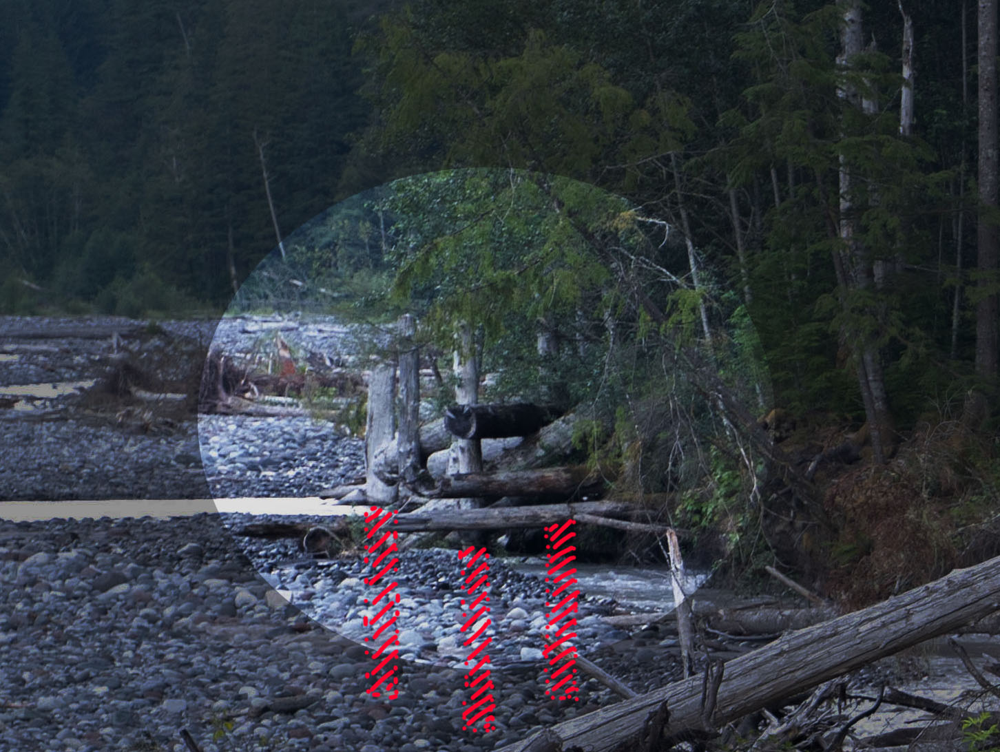

Engineered log jam
An engineered log jam is a human-made structure designed to prevent a river from eroding nearby land.
If you look closely, you can see logs standing upright. They are actually about halfway buried underground. The red marks show how deep they go. After digging holes and putting the logs in the ground, engineers put more logs on sideways and fill the gaps with rocks and soil.